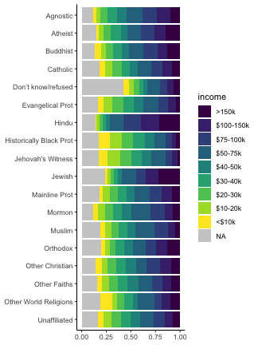

Rによるデータ前処理実習2020
(Graduate School of Life Sciences, Tohoku University)
- 入門1: 前処理とは。Rを使うメリット。Rの基本。
- 入門2: データ可視化の重要性と方法。
- データ構造の処理1: 抽出、集約など。
- データ構造の処理2: 結合、変形など。
- データ内容の処理: 数値、文字列、日時など。
- 実践: 現実の問題に対処してみる。
前処理は大きく2つに分けられる
- データ構造を対象とする処理 — 第3, 4回 本日の話題
- 使いたい部分だけ抽出
- グループごとに特徴を要約
- 何かの順に並べ替え
- 異なるテーブルの結合 👈 第4回ここから
- 変形: 縦長 ↔ 横広
- データ内容を対象とする処理 — 第5回 来週
- 数値を変換する (e.g., 対数、座標系)
- 変換: 連続変数 ↔ カテゴリカル変数 ↔ ダミー変数
- 外れ値・欠損値に対処
- 文字列から数値や日時を抜き出す
dplyr — data.frameの高速処理担当

シンプルな関数がたくさん。繋げて使う (piping)
- 抽出
- 列:
select(), - 行:
filter(),distinct(),slice() - 要約・集計
group_by(),summarize(),count()- 並べ替え
arrange(),relocate()- 列の追加・変更
mutate(),rename()- 結合
- 行方向:
bind_rows() - 列方向:
left_join(),inner_join(),full_join()
行の結合: bind_rows()
例。先頭と末尾を6行ずつ取ってひとつの表に結合する:
bind_rows(head(diamonds), tail(diamonds))
carat cut color clarity depth table price x y z
<dbl> <ord> <ord> <ord> <dbl> <dbl> <int> <dbl> <dbl> <dbl>
1 0.23 Ideal E SI2 61.5 55 326 3.95 3.98 2.43
2 0.21 Premium E SI1 59.8 61 326 3.89 3.84 2.31
3 0.23 Good E VS1 56.9 65 327 4.05 4.07 2.31
4 0.29 Premium I VS2 62.4 58 334 4.20 4.23 2.63
--
9 0.72 Good D SI1 63.1 55 2757 5.69 5.75 3.61
10 0.70 Very Good D SI1 62.8 60 2757 5.66 5.68 3.56
11 0.86 Premium H SI2 61.0 58 2757 6.15 6.12 3.74
12 0.75 Ideal D SI2 62.2 55 2757 5.83 5.87 3.64
🔰 mpg で同様に3行ずつ取って結合してみよう
共通する列で結合: full_join()
他方に無い部分を NA で補完して左右とも全行保持:
full_join(band_members, band_instruments, by = "name")
name band plays
<chr> <chr> <chr>
1 Mick Stones <NA>
2 John Beatles guitar
3 Paul Beatles bass
4 Keith <NA> guitar
band_members band_instruments
name band name plays
<chr> <chr> <chr> <chr>
1 Mick Stones 1 John guitar
2 John Beatles 2 Paul bass
3 Paul Beatles 3 Keith guitar
🔰 パイプ演算子 %>% を使って同じ処理をしてみよう
共通する列で結合: full_join()
結合に使う列の名前が違ってても大丈夫:
full_join(band_members, band_instruments2, by = c(name = "artist"))
name band plays
<chr> <chr> <chr>
1 Mick Stones <NA>
2 John Beatles guitar
3 Paul Beatles bass
4 Keith <NA> guitar
band_members band_instruments2
name band artist plays
<chr> <chr> <chr> <chr>
1 Mick Stones 1 John guitar
2 John Beatles 2 Paul bass
3 Paul Beatles 3 Keith guitar
🔰 パイプ演算子 %>% を使って同じ処理をしてみよう
共通する列で結合: left_join()
右側に無い部分を NA で補完して左側だけ全行保持:
left_join(band_members, band_instruments, by = "name")
name band plays
<chr> <chr> <chr>
1 Mick Stones <NA>
2 John Beatles guitar
3 Paul Beatles bass
band_members band_instruments
name band name plays
<chr> <chr> <chr> <chr>
1 Mick Stones 1 John guitar
2 John Beatles 2 Paul bass
3 Paul Beatles 3 Keith guitar
その逆は right_join()
🔰 パイプ演算子 %>% を使って同じ処理をしてみよう
共通する列で結合: inner_join()
左右ともに共通する値のある行だけ保持:
inner_join(band_members, band_instruments, by = "name")
name band plays
<chr> <chr> <chr>
1 John Beatles guitar
2 Paul Beatles bass
band_members band_instruments
name band name plays
<chr> <chr> <chr> <chr>
1 Mick Stones 1 John guitar
2 John Beatles 2 Paul bass
3 Paul Beatles 3 Keith guitar
🔰 パイプ演算子 %>% を使って同じ処理をしてみよう
joinまとめ

join例題: nycflights13 データセット
🔰 関連するdata.frameをいろいろな方法で結合してみよう。
install.packages("nycflights13")
library(nycflights13)
data(package = "nycflights13")
# airlines, airports, flights, planes, weather

tidyr — data.frameの変形・整形担当

- 横広から縦長に
pivot_longer(),gather()- 縦長から横広に
pivot_wider(),spread()- 列を分離、結合
separate(),unite()- 入れ子構造をつくる、解消する
nest(),unnest()
etc.
pivot_longer() 横広から縦長に
複数列にまたがる値を1列にする。
そのラベルも合わせて移動。

pivot_longer() 横広から縦長に: relig_income の例
宗教と収入の関係を調査したデータ。
世帯数のカウントが複数列にまたがっている。
print(relig_income)
religion <$10k $10-20k $20-30k $30-40k $40-50k $50-75k $75-100k $100-150k >150k Don't know/refused
<chr> <dbl> <dbl> <dbl> <dbl> <dbl> <dbl> <dbl> <dbl> <dbl> <dbl>
1 Agnostic 27 34 60 81 76 137 122 109 84 96
2 Atheist 12 27 37 52 35 70 73 59 74 76
3 Buddhist 27 21 30 34 33 58 62 39 53 54
4 Catholic 418 617 732 670 638 1116 949 792 633 1489
--
15 Other Christian 9 7 11 13 13 14 18 14 12 18
16 Other Faiths 20 33 40 46 49 63 46 40 41 71
17 Other World Religions 5 2 3 4 2 7 3 4 4 8
18 Unaffiliated 217 299 374 365 341 528 407 321 258 597
pivot_longer() 横広から縦長に: relig_income の例
宗教と収入の関係を調査したデータ。
こうなってたらggplotできるのに。
print(relig_long)
religion income count
<chr> <chr> <dbl>
1 Agnostic <$10k 27
2 Agnostic $10-20k 34
3 Agnostic $20-30k 60
4 Agnostic $30-40k 81
--
177 Unaffiliated $75-100k 407
178 Unaffiliated $100-150k 321
179 Unaffiliated >150k 258
180 Unaffiliated Don't know/refused 597

pivot_longer() 横広から縦長に: relig_income の例
複数列にまたがっている世帯数カウントを count 1列に移動。
列名になってた収入帯を income 列に移動。
relig_long = relig_income[1:2, 1:4] %>% print() %>%
pivot_longer(!religion, names_to = "income", values_to = "count") %>%
print()
religion <$10k $10-20k $20-30k
<chr> <dbl> <dbl> <dbl>
1 Agnostic 27 34 60
2 Atheist 12 27 37
religion income count
<chr> <chr> <dbl>
1 Agnostic <$10k 27
2 Agnostic $10-20k 34
3 Agnostic $20-30k 60
4 Atheist <$10k 12
5 Atheist $10-20k 27
6 Atheist $20-30k 37
移動する列を指定する !religion のところは直接 2:10 とかも可。
pivot_longer() 横広から縦長に: 練習問題
🔰 world_bank_pop の人口データを縦長にしてみよう
print(world_bank_pop)
country indicator 2000 2001 2002 2003 2004 2005 2006 2007 2008 2009 2010 2011 2012 2013 2014 2015 2016 2017
<chr> <chr> <dbl> <dbl> <dbl> <dbl> <dbl> <dbl> <dbl> <dbl> <dbl> <dbl> <dbl> <dbl> <dbl> <dbl> <dbl> <dbl> <dbl> <dbl>
1 ABW SP.URB.TOTL 4.244400e+04 4.304800e+04 4.367000e+04 4.424600e+04 4.466900e+04 4.488900e+04 4.488100e+04 4.468600e+04 4.437500e+04 4.405200e+04 4.377800e+04 4.382200e+04 4.406400e+04 4.436000e+04 4.467400e+04 4.497900e+04 4.527500e+04 4.557200e+04
2 ABW SP.URB.GROW 1.182632e+00 1.413021e+00 1.434560e+00 1.310360e+00 9.514777e-01 4.913027e-01 -1.782333e-02 -4.354289e-01 -6.984006e-01 -7.305493e-01 -6.239346e-01 1.004566e-01 5.507148e-01 6.695040e-01 7.053514e-01 6.804037e-01 6.559290e-01 6.538489e-01
3 ABW SP.POP.TOTL 9.085300e+04 9.289800e+04 9.499200e+04 9.701700e+04 9.873700e+04 1.000310e+05 1.008320e+05 1.012200e+05 1.013530e+05 1.014530e+05 1.016690e+05 1.020530e+05 1.025770e+05 1.031870e+05 1.037950e+05 1.043410e+05 1.048220e+05 1.052640e+05
4 ABW SP.POP.GROW 2.055027e+00 2.225930e+00 2.229056e+00 2.109354e+00 1.757353e+00 1.302039e+00 7.975628e-01 3.840600e-01 1.313107e-01 9.861642e-02 2.126801e-01 3.769848e-01 5.121450e-01 5.929140e-01 5.874924e-01 5.246582e-01 4.599292e-01 4.207807e-01
--
1053 ZWE SP.URB.TOTL 4.125987e+06 4.225519e+06 4.323307e+06 4.356041e+06 4.381920e+06 4.413845e+06 4.452539e+06 4.497911e+06 4.550222e+06 4.609702e+06 4.676094e+06 4.749752e+06 4.830153e+06 4.915898e+06 5.009411e+06 5.109528e+06 5.215921e+06 5.328745e+06
1054 ZWE SP.URB.GROW 2.523735e+00 2.383683e+00 2.287853e+00 7.542999e-01 5.923367e-01 7.259207e-01 8.728304e-01 1.013857e+00 1.156296e+00 1.298719e+00 1.429993e+00 1.562926e+00 1.678574e+00 1.759630e+00 1.884390e+00 1.978869e+00 2.060865e+00 2.140007e+00
1055 ZWE SP.POP.TOTL 1.222225e+07 1.236616e+07 1.250052e+07 1.263390e+07 1.277751e+07 1.294003e+07 1.312427e+07 1.332991e+07 1.355847e+07 1.381060e+07 1.408632e+07 1.438665e+07 1.471083e+07 1.505451e+07 1.541168e+07 1.577745e+07 1.615036e+07 1.652990e+07
1056 ZWE SP.POP.GROW 1.298782e+00 1.170597e+00 1.080653e+00 1.061280e+00 1.130323e+00 1.263909e+00 1.413720e+00 1.554735e+00 1.700106e+00 1.842497e+00 1.976756e+00 2.109672e+00 2.228306e+00 2.309366e+00 2.344799e+00 2.345643e+00 2.336070e+00 2.322864e+00
pivot_wider() 縦長から横広に
1列に収まっていた値を複数列の行列に変換。
そのラベルを列の名前にする。

pivot_wider() 縦長から横広に: fish_encounters
発信器のついた魚が観測地点を通過したことを記録したデータ。
既にggplotしやすそうな形だけど、あえて1魚1行の横広にしたい。
print(fish_encounters)
fish station seen
<fct> <fct> <int>
1 4842 Release 1
2 4842 I80_1 1
3 4842 Lisbon 1
4 4842 Rstr 1
--
111 4864 I80_1 1
112 4865 Release 1
113 4865 I80_1 1
114 4865 Lisbon 1
print(fish_wide)
fish Release I80_1 Lisbon Rstr Base_TD BCE BCW BCE2 BCW2 MAE MAW
<fct> <int> <int> <int> <int> <int> <int> <int> <int> <int> <int> <int>
1 4842 1 1 1 1 1 1 1 1 1 1 1
2 4843 1 1 1 1 1 1 1 1 1 1 1
3 4844 1 1 1 1 1 1 1 1 1 1 1
4 4845 1 1 1 1 1 NA NA NA NA NA NA
--
16 4862 1 1 1 1 1 1 1 1 1 NA NA
17 4863 1 1 NA NA NA NA NA NA NA NA NA
18 4864 1 1 NA NA NA NA NA NA NA NA NA
19 4865 1 1 1 NA NA NA NA NA NA NA NA
pivot_wider() 縦長から横広に: fish_encounters
観測地点 station を列名に移動。
観察されたかどうか seen を各列に移動。存在しなければ NA
fish_encounters %>%
pivot_wider(names_from = station, values_from = seen)
fish Release I80_1 Lisbon Rstr Base_TD BCE BCW BCE2 BCW2 MAE MAW
<fct> <int> <int> <int> <int> <int> <int> <int> <int> <int> <int> <int>
1 4842 1 1 1 1 1 1 1 1 1 1 1
2 4843 1 1 1 1 1 1 1 1 1 1 1
3 4844 1 1 1 1 1 1 1 1 1 1 1
4 4845 1 1 1 1 1 NA NA NA NA NA NA
--
16 4862 1 1 1 1 1 1 1 1 1 NA NA
17 4863 1 1 NA NA NA NA NA NA NA NA NA
18 4864 1 1 NA NA NA NA NA NA NA NA NA
19 4865 1 1 1 NA NA NA NA NA NA NA NA
values_fill = 0 とすれば NA じゃなく 0 で埋められる。
pivot_wider() 縦長から横広に: 練習問題
🔰 population で1年のデータが1行になるように変形しよう
🔰 population で1国のデータが1行になるように変形しよう
print(population)
country year population
<chr> <int> <int>
1 Afghanistan 1995 17586073
2 Afghanistan 1996 18415307
3 Afghanistan 1997 19021226
4 Afghanistan 1998 19496836
--
4057 Zimbabwe 2010 13076978
4058 Zimbabwe 2011 13358738
4059 Zimbabwe 2012 13724317
4060 Zimbabwe 2013 14149648
🔰 us_rent_income で income と rent の推定値がそれぞれ列となるように変形しよう
print(us_rent_income)
GEOID NAME variable estimate moe
<chr> <chr> <chr> <dbl> <dbl>
1 01 Alabama income 24476 136
2 01 Alabama rent 747 3
3 02 Alaska income 32940 508
4 02 Alaska rent 1200 13
--
101 56 Wyoming income 30854 342
102 56 Wyoming rent 828 11
103 72 Puerto Rico income NA NA
104 72 Puerto Rico rent 464 6
separate() 列を分離

separate() 列を分離: table3
R for Data Science に登場するお試しデータ。
print(table3)
country year rate
<chr> <int> <chr>
1 Afghanistan 1999 745/19987071
2 Afghanistan 2000 2666/20595360
3 Brazil 1999 37737/172006362
4 Brazil 2000 80488/174504898
5 China 1999 212258/1272915272
6 China 2000 213766/1280428583
separate() 列を分離: table3
R for Data Science に登場するお試しデータ。
table3 %>% separate(rate, into = c("cases", "population"), sep = "/")
country year cases population
<chr> <int> <chr> <chr>
1 Afghanistan 1999 745 19987071
2 Afghanistan 2000 2666 20595360
3 Brazil 1999 37737 172006362
4 Brazil 2000 80488 174504898
5 China 1999 212258 1272915272
6 China 2000 213766 1280428583
sep は指定しなくてもデフォルトで記号や空白を認識してくれる。
unite() 列を融合

unite() 列を融合: table5
R for Data Science に登場するお試しデータ。
print(table5)
country century year rate
<chr> <chr> <chr> <chr>
1 Afghanistan 19 99 745/19987071
2 Afghanistan 20 00 2666/20595360
3 Brazil 19 99 37737/172006362
4 Brazil 20 00 80488/174504898
5 China 19 99 212258/1272915272
6 China 20 00 213766/1280428583
unite() 列を融合: table5
R for Data Science に登場するお試しデータ。
table5 %>%
unite(year, century, year, sep = "") %>%
mutate(year = as.integer(year))
country year rate
<chr> <int> <chr>
1 Afghanistan 1999 745/19987071
2 Afghanistan 2000 2666/20595360
3 Brazil 1999 37737/172006362
4 Brazil 2000 80488/174504898
5 China 1999 212258/1272915272
6 China 2000 213766/1280428583
結合直後は文字列になっているので数値なら忘れずに変換。
こうしたデータ内容を対象とする処理については、来週くわしく。
separate() / unite() 練習問題
🔰 table3 の rate を分割したあと、また元に戻してみよう。
🔰 table3 の year を分割して table5 を作ってみよう。
print(table3)
country year rate
<chr> <int> <chr>
1 Afghanistan 1999 745/19987071
2 Afghanistan 2000 2666/20595360
3 Brazil 1999 37737/172006362
4 Brazil 2000 80488/174504898
5 China 1999 212258/1272915272
6 China 2000 213766/1280428583
🔰 world_bank_pop の indicator を3列に分割してみよう。
print(world_bank_pop)
country indicator 2000 2001 2002 2003 2004 2005 2006 2007 2008 2009 2010 2011 2012 2013 2014 2015 2016 2017
<chr> <chr> <dbl> <dbl> <dbl> <dbl> <dbl> <dbl> <dbl> <dbl> <dbl> <dbl> <dbl> <dbl> <dbl> <dbl> <dbl> <dbl> <dbl> <dbl>
1 ABW SP.URB.TOTL 4.244400e+04 4.304800e+04 4.367000e+04 4.424600e+04 4.466900e+04 4.488900e+04 4.488100e+04 4.468600e+04 4.437500e+04 4.405200e+04 4.377800e+04 4.382200e+04 4.406400e+04 4.436000e+04 4.467400e+04 4.497900e+04 4.527500e+04 4.557200e+04
2 ABW SP.URB.GROW 1.182632e+00 1.413021e+00 1.434560e+00 1.310360e+00 9.514777e-01 4.913027e-01 -1.782333e-02 -4.354289e-01 -6.984006e-01 -7.305493e-01 -6.239346e-01 1.004566e-01 5.507148e-01 6.695040e-01 7.053514e-01 6.804037e-01 6.559290e-01 6.538489e-01
3 ABW SP.POP.TOTL 9.085300e+04 9.289800e+04 9.499200e+04 9.701700e+04 9.873700e+04 1.000310e+05 1.008320e+05 1.012200e+05 1.013530e+05 1.014530e+05 1.016690e+05 1.020530e+05 1.025770e+05 1.031870e+05 1.037950e+05 1.043410e+05 1.048220e+05 1.052640e+05
4 ABW SP.POP.GROW 2.055027e+00 2.225930e+00 2.229056e+00 2.109354e+00 1.757353e+00 1.302039e+00 7.975628e-01 3.840600e-01 1.313107e-01 9.861642e-02 2.126801e-01 3.769848e-01 5.121450e-01 5.929140e-01 5.874924e-01 5.246582e-01 4.599292e-01 4.207807e-01
--
1053 ZWE SP.URB.TOTL 4.125987e+06 4.225519e+06 4.323307e+06 4.356041e+06 4.381920e+06 4.413845e+06 4.452539e+06 4.497911e+06 4.550222e+06 4.609702e+06 4.676094e+06 4.749752e+06 4.830153e+06 4.915898e+06 5.009411e+06 5.109528e+06 5.215921e+06 5.328745e+06
1054 ZWE SP.URB.GROW 2.523735e+00 2.383683e+00 2.287853e+00 7.542999e-01 5.923367e-01 7.259207e-01 8.728304e-01 1.013857e+00 1.156296e+00 1.298719e+00 1.429993e+00 1.562926e+00 1.678574e+00 1.759630e+00 1.884390e+00 1.978869e+00 2.060865e+00 2.140007e+00
1055 ZWE SP.POP.TOTL 1.222225e+07 1.236616e+07 1.250052e+07 1.263390e+07 1.277751e+07 1.294003e+07 1.312427e+07 1.332991e+07 1.355847e+07 1.381060e+07 1.408632e+07 1.438665e+07 1.471083e+07 1.505451e+07 1.541168e+07 1.577745e+07 1.615036e+07 1.652990e+07
1056 ZWE SP.POP.GROW 1.298782e+00 1.170597e+00 1.080653e+00 1.061280e+00 1.130323e+00 1.263909e+00 1.413720e+00 1.554735e+00 1.700106e+00 1.842497e+00 1.976756e+00 2.109672e+00 2.228306e+00 2.309366e+00 2.344799e+00 2.345643e+00 2.336070e+00 2.322864e+00
nest() 入れ子にする
グループ毎にdata.frameを区切ってlist型の列に入れる。

 purrrパッケージと共に扱えるようになると強力 (今回は紹介だけ)
purrrパッケージと共に扱えるようになると強力 (今回は紹介だけ)
nest() 入れ子にする
グループ毎にdata.frameを区切ってlist型の列に入れる。
mpg_nested = mpg %>% nest(data = -drv) %>% print()
drv data
<chr> <list>
1 f <tbl_df [106 x 10]>
2 4 <tbl_df [103 x 10]>
3 r <tbl_df [25 x 10]>
mpg_nested$data[[1]]
manufacturer model displ year cyl trans cty hwy fl class
<chr> <chr> <dbl> <int> <int> <chr> <int> <int> <chr> <chr>
1 audi a4 1.8 1999 4 auto(l5) 18 29 p compact
2 audi a4 1.8 1999 4 manual(m5) 21 29 p compact
3 audi a4 2.0 2008 4 manual(m6) 20 31 p compact
4 audi a4 2.0 2008 4 auto(av) 21 30 p compact
--
103 volkswagen passat 2.0 2008 4 manual(m6) 21 29 p midsize
104 volkswagen passat 2.8 1999 6 auto(l5) 16 26 p midsize
105 volkswagen passat 2.8 1999 6 manual(m5) 18 26 p midsize
106 volkswagen passat 3.6 2008 6 auto(s6) 17 26 p midsize
少し前に出てきたこれ、そろそろできるのでは
print(VADeaths)
Rural Male Rural Female Urban Male Urban Female
50-54 11.7 8.7 15.4 8.4
55-59 18.1 11.7 24.3 13.6
60-64 26.9 20.3 37.0 19.3
65-69 41.0 30.9 54.6 35.1
70-74 66.0 54.3 71.1 50.0
↓ 下ごしらえ: 作図・解析で使いやすい整然データに
lbound ubound region sex death
<int> <int> <chr> <chr> <dbl>
1 50 54 Rural Male 11.7
2 50 54 Rural Female 8.7
3 50 54 Urban Male 15.4
4 50 54 Urban Female 8.4
--
17 70 74 Rural Male 66.0
18 70 74 Rural Female 54.3
19 70 74 Urban Male 71.1
20 70 74 Urban Female 50.0
ちょっと補足
class(VADeaths)
[1] "matrix" "array"
rownames(VADeaths)
[1] "50-54" "55-59" "60-64" "65-69" "70-74"
VADeaths %>%
as.data.frame() %>% # dplyr/tidyrで扱うのはdata.frame
rownames_to_column("age") %>% # 行名は扱いにくいので普通の列に
print()
age Rural Male Rural Female Urban Male Urban Female
1 50-54 11.7 8.7 15.4 8.4
2 55-59 18.1 11.7 24.3 13.6
3 60-64 26.9 20.3 37.0 19.3
4 65-69 41.0 30.9 54.6 35.1
5 70-74 66.0 54.3 71.1 50.0
例題: VADeaths を縦長にしてggplotしてみよう
as.data.frame(VADeaths) %>% # data.frameに変換
rownames_to_column("age") # 行名を列に
age Rural Male Rural Female Urban Male Urban Female
1 50-54 11.7 8.7 15.4 8.4
2 55-59 18.1 11.7 24.3 13.6
3 60-64 26.9 20.3 37.0 19.3
4 65-69 41.0 30.9 54.6 35.1
5 70-74 66.0 54.3 71.1 50.0
例題: VADeaths を縦長にしたい
as.data.frame(VADeaths) %>% # data.frameに変換
rownames_to_column("age") %>% # 行名を列に
pivot_longer(-age, values_to = "death") # age以外を移動して縦長化
# 新しいname列を分割
age name death
<chr> <chr> <dbl>
1 50-54 Rural Male 11.7
2 50-54 Rural Female 8.7
3 50-54 Urban Male 15.4
4 50-54 Urban Female 8.4
--
17 70-74 Rural Male 66.0
18 70-74 Rural Female 54.3
19 70-74 Urban Male 71.1
20 70-74 Urban Female 50.0
例題: VADeaths を縦長にしたい
as.data.frame(VADeaths) %>% # data.frameに変換
rownames_to_column("age") %>% # 行名を列に
pivot_longer(-age, values_to = "death") %>% # age以外を移動して縦長化
separate(name, c("region", "sex")) # 新しいname列を分割
age region sex death
<chr> <chr> <chr> <dbl>
1 50-54 Rural Male 11.7
2 50-54 Rural Female 8.7
3 50-54 Urban Male 15.4
4 50-54 Urban Female 8.4
--
17 70-74 Rural Male 66.0
18 70-74 Rural Female 54.3
19 70-74 Urban Male 71.1
20 70-74 Urban Female 50.0
例題: VADeaths を縦長にしたい
va_deaths = as.data.frame(VADeaths) %>% # data.frameに変換
rownames_to_column("age") %>% # 行名を列に
pivot_longer(-age, values_to = "death") %>% # age以外を移動して縦長化
separate(name, c("region", "sex")) %>% # 新しいname列を分割
separate(age, c("lbound", "ubound"), "-", convert = TRUE) %>%
print() # 下限と上限を分離
lbound ubound region sex death
<int> <int> <chr> <chr> <dbl>
1 50 54 Rural Male 11.7
2 50 54 Rural Female 8.7
3 50 54 Urban Male 15.4
4 50 54 Urban Female 8.4
--
17 70 74 Rural Male 66.0
18 70 74 Rural Female 54.3
19 70 74 Urban Male 71.1
20 70 74 Urban Female 50.0
例題: VADeaths 別解
va_deaths = as.data.frame(VADeaths) %>% # data.frameに変換
rownames_to_column("age") %>% # 行名を列に
pivot_longer( # 縦長に変形したい
-age, # age以外の列に入ってる値を移動
names_to = c("region", "sex"), # 元の列名を2つに分離
names_sep = " ", # スペースで切る
values_to = "death") %>% # 値の行き先の列名
separate(age, c("lbound", "ubound"), "-", convert = TRUE) %>%
print() # 下限と上限を分離
lbound ubound region sex death
<int> <int> <chr> <chr> <dbl>
1 50 54 Rural Male 11.7
2 50 54 Rural Female 8.7
3 50 54 Urban Male 15.4
4 50 54 Urban Female 8.4
--
17 70 74 Rural Male 66.0
18 70 74 Rural Female 54.3
19 70 74 Urban Male 71.1
20 70 74 Urban Female 50.0
例題: VADeaths 作図例
ggplot(va_deaths) +
aes(lbound, death) +
geom_point(aes(color = sex, shape = region), size = 5) +
theme_classic(base_size = 18)
例題: anscombe
4組のx-yは、平均・分散・相関係数がほぼ同じ？
anscombe %>%
rowid_to_column("id") # IDをつけておく
# x y で始まる列の値を移して縦長に
id x1 x2 x3 x4 y1 y2 y3 y4
<int> <dbl> <dbl> <dbl> <dbl> <dbl> <dbl> <dbl> <dbl>
1 1 10 10 10 8 8.04 9.14 7.46 6.58
2 2 8 8 8 8 6.95 8.14 6.77 5.76
3 3 13 13 13 8 7.58 8.74 12.74 7.71
4 4 9 9 9 8 8.81 8.77 7.11 8.84
--
8 8 4 4 4 19 4.26 3.10 5.39 12.50
9 9 12 12 12 8 10.84 9.13 8.15 5.56
10 10 7 7 7 8 4.82 7.26 6.42 7.91
11 11 5 5 5 8 5.68 4.74 5.73 6.89
🔰 うまく変形してggplotと要約統計量の計算をしてみよう
例題: anscombe
4組のx-yは、平均・分散・相関係数がほぼ同じ？
anscombe %>%
rowid_to_column("id") %>% # IDをつけておく
pivot_longer(matches("^x|y")) # x y で始まる列の値を移して縦長に
# name列を分割
id name value
<int> <chr> <dbl>
1 1 x1 10.00
2 1 x2 10.00
3 1 x3 10.00
4 1 x4 8.00
--
85 11 y1 5.68
86 11 y2 4.74
87 11 y3 5.73
88 11 y4 6.89
例題: anscombe
4組のx-yは、平均・分散・相関係数がほぼ同じ？
anscombe %>%
rowid_to_column("id") %>% # IDをつけておく
pivot_longer(matches("^x|y")) %>% # x y で始まる列の値を移して縦長に
separate(name, c("axis", "group"), 1L, convert = TRUE)
# name列を分割
id axis group value
<int> <chr> <int> <dbl>
1 1 x 1 10.00
2 1 x 2 10.00
3 1 x 3 10.00
4 1 x 4 8.00
--
85 11 y 1 5.68
86 11 y 2 4.74
87 11 y 3 5.73
88 11 y 4 6.89
例題: anscombe
4組のx-yは、平均・分散・相関係数がほぼ同じ？
tidy_anscombe = anscombe %>%
rowid_to_column("id") %>% # IDをつけておく
pivot_longer(matches("^x|y")) %>% # x y で始まる列の値を移して縦長に
separate(name, c("axis", "group"), 1L, convert = TRUE) %>%
# name列を分割
pivot_wider(names_from = axis, values_from = value) %>%
# axis列内の x y を列にして横広化
arrange(group) %>% # グループごとに並べる
print() # ggplotしたい形！
id group x y
<int> <int> <dbl> <dbl>
1 1 1 10 8.04
2 2 1 8 6.95
3 3 1 13 7.58
4 4 1 9 8.81
--
41 8 4 19 12.50
42 9 4 8 5.56
43 10 4 8 7.91
44 11 4 8 6.89
例題: anscombe 別解
4組のx-yは、平均・分散・相関係数がほぼ同じ？
tidy_anscombe = anscombe %>%
pivot_longer( # 縦長に変形したい
everything(), # すべての列について
names_to = c(".value", "group"), # 新しい列名
names_sep = 1L, # 切る位置
names_transform = list(group = as.integer)) %>% # 型変換
arrange(group) %>% # グループごとに並べる
print() # ggplotしたい形！
group x y
<int> <dbl> <dbl>
1 1 10 8.04
2 1 8 6.95
3 1 13 7.58
4 1 9 8.81
--
41 4 19 12.50
42 4 8 5.56
43 4 8 7.91
44 4 8 6.89
例題: anscombe 作図例
4組のx-yは、平均・分散・相関係数がほぼ同じ？
ggplot(tidy_anscombe) + aes(x, y) +
geom_point(size = 3) +
stat_smooth(method = lm, formula = y ~ x, se = FALSE, fullrange = TRUE) +
facet_wrap(~ group, nrow = 1L) +
theme_bw(base_size = 16)
例題: anscombe 要約
4組のx-yは、平均・分散・相関係数がほぼ同じ？
tidy_anscombe %>%
group_by(group) %>% # group列でグループ化して
summarize( # x, y列を使ってsummarize
mean_x = mean(x),
mean_y = mean(y),
sd_x = sd(x),
sd_y = sd(y),
cor_xy = cor(x, y)
)
group mean_x mean_y sd_x sd_y cor_xy
<int> <dbl> <dbl> <dbl> <dbl> <dbl>
1 1 9 7.500909 3.316625 2.031568 0.8164205
2 2 9 7.500909 3.316625 2.031657 0.8162365
3 3 9 7.500000 3.316625 2.030424 0.8162867
4 4 9 7.500909 3.316625 2.030579 0.8165214
前処理は大きく2つに分けられる
- データ構造を対象とする処理 👈 第3, 4回 本日の話題
- 使いたい部分だけ抽出 —
select(),filter() - グループごとに特徴を要約 —
group_by(),summarize() - 何かの順に並べ替え —
arrange() - 異なるテーブルの結合 —
*_join() - 変形: 縦長 ↔ 横広 —
pivot_longer(),pivot_wider()
- 使いたい部分だけ抽出 —
- データ内容を対象とする処理 — 第5回 来週
- 数値を変換する (e.g., 対数、座標系)
- 変換: 連続変数 ↔ カテゴリカル変数 ↔ ダミー変数
- 外れ値・欠損値に対処
- 文字列から数値や日時を抜き出す
憶えなくていい。公式サイトなどを見ながら作業

Reference
- R for Data Science — Hadley Wickham and Garrett Grolemund
- https://r4ds.had.co.nz/, Paperback, 日本語版書籍
前処理大全 — 本橋智光
RユーザのためのRStudio[実践]入門 (宇宙本) — 松村ら
- 整然データとは何か — @f_nisihara
- Speaker Deck, Colorless Green Ideas
- Official documents:
- tidyverse, dplyr, tidyr, purrr, tibble, readr,
- Older versions
- 「Rにやらせて楽しよう — データの可視化と下ごしらえ」 岩嵜航 2018
- 「Rを用いたデータ解析の基礎と応用」石川由希 2019 名古屋大学